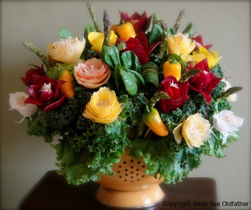

Now available! Edible Veggie Bouquet eBook!

I want to share some exciting news with all of you. Today, we released a very special eBook called “Make your own Edible Veggie Bouquet”. After months of designing, working on the layout, collecting photos, writing the step-by-step instructions and endless nights of editing…it is done. I created this eBook to help teach, inspire and encourage you to make you very own veggie masterpieces!
My first bouquet was inspired by my Aunt Nancy, to whom this book is dedicated. So to you Nancy and to my friends who read and re-read the early versions, supplying us with many great suggestions, a very heartfelt thank you. I also want to really thank my loving husband who did all of the editing, while learning how to format Documents like this so it can be enjoyed on your computer, iPad, Nook, iPhone, etc. There were countless hours of behind scenes work that had to take place for this eBook to become a reality. Bob is the most amazing human that I have ever known and I am blessed to call him my husband, my friend and most of all my partner in life. :)
You can purchase my eBook by clicking here.
© AmieSue.com